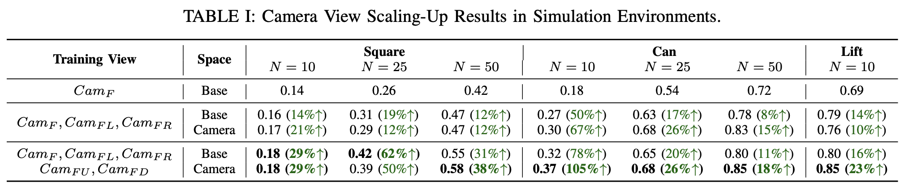
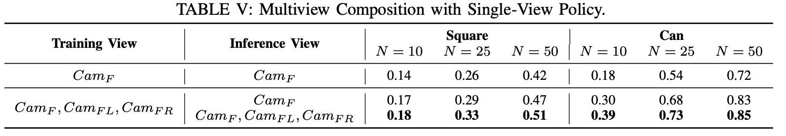
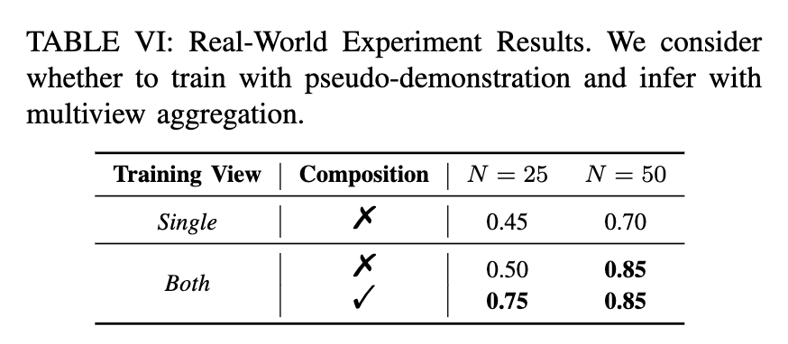

Multi-Camera View Scaling for Data-Efficient Robot Imitation Learning
TL;DR
We leverage synchronized multi-camera views to turn each expert demonstration into diverse pseudo-demonstrations to improve data efficiency in robot imitation learning without additional human effort.
Abstract
The generalization ability of imitation learning policies for robotic manipulation is fundamentally constrained by the diversity of expert demonstrations, while collecting demonstrations across varied environments is costly and difficult in practice. In this paper, we propose a practical framework that exploits inherent scene diversity without additional human effort by scaling camera views during demonstration collection. Instead of acquiring more trajectories, multiple synchronized camera perspectives are used to generate pseudo-demonstrations from each expert trajectory, which enriches the training distribution and improves viewpoint invariance in visual representations. We analyze how different action spaces interact with view scaling and show that camera-space representations further enhance diversity. In addition, we introduce a multiview action aggregation method that allows single-view policies to benefit from multiple cameras during deployment. Extensive experiments in simulation and real-world manipulation tasks demonstrate significant gains in data efficiency and generalization compared to single-view baselines. Our results suggest that scaling camera views provides a practical and scalable solution for imitation learning, which requires minimal additional hardware setup and integrates seamlessly with existing imitation learning algorithms.
Methodology
Camera View Scaling (training)
Instead of collecting more demonstrations, we capture each trajectory with multiple synchronized cameras and treat each view as a separate pseudo-demonstration. This expands the dataset from a single trajectory into multiple view-specific sequences, increasing visual diversity at virtually no extra human cost. To ensure consistency across views, we transform actions into appropriate coordinate spaces (e.g., camera space), enabling effective learning from multiview data and further enhancing diversity.
Figure 1: Camera View Scaling-Up. Each expert demonstration can be converted to multiple pseudo-demonstrations by exploiting multiple camera perspective views.
Camera View Scaling (inference, optional)
Although trained as a single-view policy, our model can optionally leverage multiple camera views at test time by aggregating action predictions across views. We combine per-view action distributions to favor actions that are consistent across perspectives, reducing uncertainty and improving robustness. This aggregation is efficiently implemented within the diffusion sampling process, enabling parallel multiview inference with minimal overhead.
Figure 2: Multiview Composition for Model Inference. We optionally exploit multiview camera inputs with single-view visuomotor policy during inference.
Results
Simulation Results
Training with multiview pseudo-demonstrations consistently outperforms single-view learning, often yielding large gains in success rate with minimal additional cost. Increasing the number of camera views further improves performance, highlighting the benefit of view scaling.

The model can learn to focus on most important regions with camera view scaling-up during training.
While trained as a single-view policy, our method can leverage multiple camera inputs at inference by aggregating independently predicted actions. This multiview aggregation improves performance over single-view deployment with minimal latency due to parallel processing.

Real-World Results
We evaluate our method on “pouring water” task with FANUC CRX-10iA robot arm. Both multiview scaling during training and multiview composition during inference help to improve the performance.


Citation
@misc{xie2026multicameraviewscalingdataefficient,
title={Multi-Camera View Scaling for Data-Efficient Robot Imitation Learning},
author={Yichen Xie and Yixiao Wang and Shuqi Zhao and Cheng-En Wu and Masayoshi Tomizuka and Jianwen Xie and Hao-Shu Fang},
year={2026},
eprint={2604.00557},
archivePrefix={arXiv},
primaryClass={cs.RO},
url={https://arxiv.org/abs/2604.00557},
}